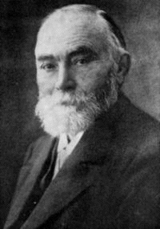

Background Concepts

First-order Logic
- Tolerably expressive language
- Prove conjecture is a logical consequence of
axioms
- Semi-decidable
Semantics
- An interpretation evaluates a formula to true or
false
- A model evaluates the formula to true
- A conjecture is a logical consequence of a set of axioms iff
every model of the axioms is a model of the conjecture.
- Consistent formulae have a model, and are satisfiable
- Contradictory formulae have no model, and are unsatisfiable
- A conjecture is a logical consequence of a set of axioms iff
the negated conjecture and axioms are unsatisfiable.
The Practice
- Proof by contradiction (refutation) of clause normal form
- Super-exponential search space
- Systems are ^C complete
- Model finding
- Systems for finding finite models
- Systems for finding Herbrand (infinite) models
- Systems for establishing the existence of infinite models